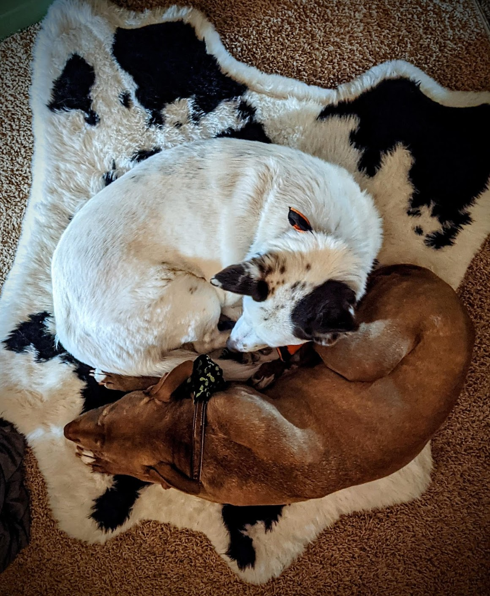

copy loremeipsotashdtcopy The dog or domestic dog, (Canis familiaris[4][5] or Canis lupus familiaris[5]) is a domesticated descendant of the wolf which is characterized by an upturning tail. The dog derived from an ancient, extinct wolf,[6][7] and the modern grey wolf is the dog's nearest living relative.[8] The dog was the first species to be domesticated,[9][8] by hunter–gatherers over 15,000 years ago,[7] before the development of agriculture.[1]
Due to their long association with humans, dogs have expanded to a large number of domestic individuals[10] and gained the ability to thrive on a starch-rich diet that would be inadequate for other canids.[11] Over the millennia, dogs became uniquely adapted to human behavior, and the human-canine bond has been a topic of frequent study.[12]
The dog has been selectively bred over millennia Due to their long association with humans, dogs have expanded to a large number of domestic individuals[10] and gained the ability to thrive on a starch-rich diet that would be inadequate for other canids.[11] Over the millennia, dogs became uniquely adapted to human behavior, and the human-canine bond has been a topic of frequent study.[12]
The dog has been selectively bred over millDue to their long association with humans, dogs have expanded to a large number of domestic individuals[10] and gained the ability to thrive on a starch-rich diet that would be inadequate for other canids.[11] Over the millennia, dogs became uniquely adapted to human behavior, and the human-canine bond has been a topic of frequent study.[12]
The dog has been selectively bred over millfor various behaviors, sensory capabilities, and physical attributes.[13] Dog breeds vary widely in shape, size, and color. They perform many roles for humans, such as hunting, herding, pulling loads, protection, assisting police and the military, companionship, therapy, and aiding disabled people. This influence onloremeipsotashdtcopy loremeipsotashdtcopy loremeipsotashdtcopy loremeipsotashdt